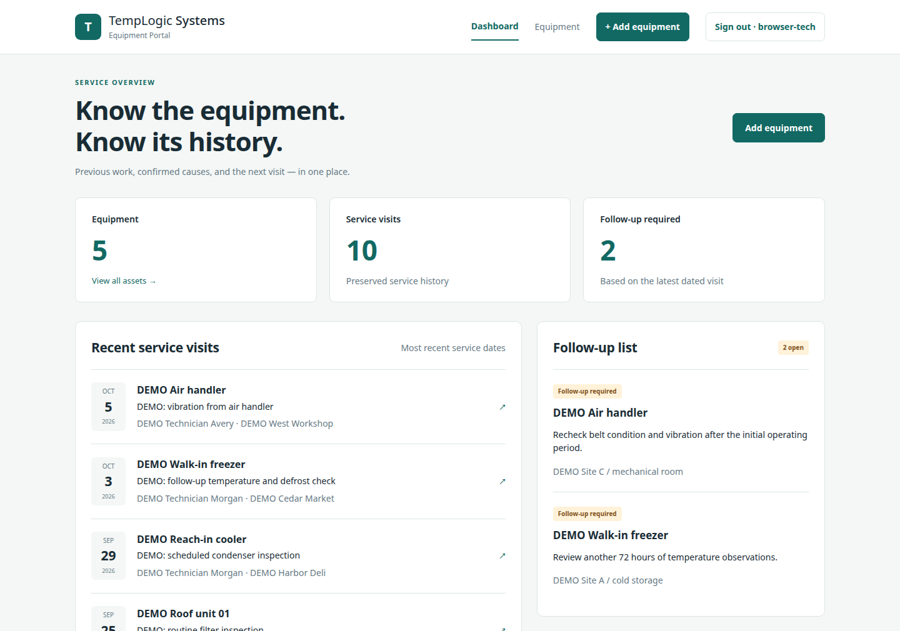
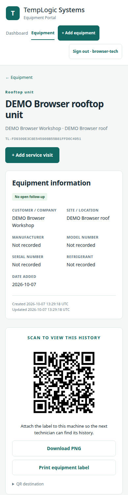
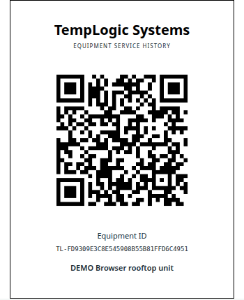

Know the equipment. Know its history.Conozca el equipo. Conozca su historia.
A QR label on each machine opens its page: what it is, and every earlier visit, diagnosis, confirmed cause, repair and part. The technician scans it, reads what was done before, and adds today's visit.Una etiqueta QR en cada máquina abre su página: qué es, y cada visita, diagnóstico, causa confirmada, reparación y pieza anteriores. El técnico la escanea, lee lo que se hizo antes y agrega la visita de hoy.

Scan, read, add.Escanee, lea, agregue.
Register the machineRegistre la máquina
Only a name and a type are required. It gets a permanent ID that never changes.Solo se ocupa un nombre y un tipo. Recibe un ID permanente que nunca cambia.
Print and attach its labelImprima y pegue su etiqueta
The label has the ID and a QR code.La etiqueta trae el ID y un código QR.
Scan it at the next visitEscanéela en la siguiente visita
The machine's page opens with its full history, oldest to newest.Se abre la página de la máquina con todo su historial, del más viejo al más nuevo.
Add today's visitAgregue la visita de hoy
Date, technician and complaint are required; symptoms, readings, diagnosis, confirmed cause, repair, parts and refrigerant are optional.Fecha, técnico y queja son obligatorios; síntomas, lecturas, diagnóstico, causa confirmada, reparación, piezas y refrigerante son opcionales.


What was written stays written.Lo que se escribió, escrito se queda.
Visits cannot be edited or deletedLas visitas no se pueden editar ni borrar
There is no edit or delete button, and the database itself refuses to change a past visit. A new visit is always a new record.No hay botón de editar ni de borrar, y la base de datos misma se niega a cambiar una visita pasada. Una visita nueva siempre es un registro nuevo.
A double tap does not save twiceUn doble toque no guarda dos veces
If the phone sends the same form twice, the second one returns the first visit instead of creating another.Si el celular manda el mismo formulario dos veces, el segundo regresa la primera visita en vez de crear otra.
What still needs a return visitLo que todavía ocupa otra visita
The dashboard lists machines whose latest visit asked for a follow-up. Typing in an older visit later cannot quietly reopen or close it.El panel enseña las máquinas cuya última visita pidió seguimiento. Capturar después una visita vieja no puede abrirlo ni cerrarlo a escondidas.
Find a machine fastEncuentre una máquina rápido
By ID, customer, site, type, manufacturer, model, serial or name.Por ID, cliente, sitio, tipo, fabricante, modelo, serie o nombre.
It never touches the equipmentNunca toca el equipo
No diagnosis engine, no AI, no remote control and no setpoint changes. It keeps what people wrote.Sin motor de diagnóstico, sin IA, sin control remoto y sin cambiar setpoints. Guarda lo que la gente escribió.
One file you ownUn archivo que es suyo
Everything lives in one database file on your own computer. No tracking and no outside services.Todo vive en un archivo de base de datos en su propia computadora. Sin rastreo y sin servicios de fuera.
What it does not do yet.Lo que todavía no hace.
- Scanning from a phone needs the portal on an address the phone can reach. That setup is not done yet: today it runs on one computer, and the QR opens there.Escanear desde un celular ocupa que el portal esté en una dirección que el celular alcance. Esa instalación todavía no está hecha: hoy corre en una computadora, y el QR abre ahí.
- One technician account. No companies, roles or separate customers yet.Una sola cuenta de técnico. Todavía sin compañías, roles ni clientes separados.
- The screen is in English only for now.Por ahora la pantalla está solo en inglés.
- No photo uploads, PDF reports, imports or exports yet.Todavía sin subir fotos, reportes en PDF, importar ni exportar.
- A wrong entry cannot be corrected in place; a proper correction process is still to be built.Una captura equivocada no se puede corregir ahí mismo; el proceso de corrección todavía está por hacerse.
- No automatic backups. It has not had an independent security audit.Sin respaldos automáticos. No ha tenido una auditoría de seguridad independiente.
Before you ask.Antes de que pregunte.
What if I change the web address later?¿Y si después cambio la dirección web?
The machine's ID never changes. A label already printed keeps the old address, so it must be reprinted or the old address redirected.El ID de la máquina nunca cambia. Una etiqueta ya impresa conserva la dirección vieja, así que hay que reimprimirla o redirigir la dirección vieja.
Does it diagnose?¿Diagnostica?
No. It is a record book: it keeps what the technician wrote and shows it to the next one.No. Es un libro de registro: guarda lo que el técnico escribió y se lo enseña al siguiente.
What do I need to run it?¿Qué ocupo para correrlo?
A computer with Python 3.12 or newer. It opens in a web browser.Una computadora con Python 3.12 o más nuevo. Se abre en un navegador.
Can I buy it today?¿Puedo comprarlo hoy?
Not yet. Write to us and you will hear first.Todavía no. Escríbanos y será de los primeros en saber.
Want to know when it is ready?¿Quiere saber cuando esté listo?
Send one email. You get one reply when Equipulse is available, and nothing else.Mande un correo. Recibe una respuesta cuando Equipulse esté disponible, y nada más.
Email usEscríbanos